Temp <- seq(0, 60, 0.25)
RH <- seq(0, 100, 1)
TRHgrid <-
expand.grid(Temp, RH) |>
tibble() |>
rename(Temp = Var1, RH = Var2) Mould
Zeng model
TRHgrid |>
mutate(Mould_Zeng = calcMould_Zeng(Temp, RH)) |>
ggplot(aes(Temp, RH, z = Mould_Zeng)) +
geom_contour_filled(bins = 20) +
labs(title = "Mould Isoline Limit: LM0") +
theme_bw()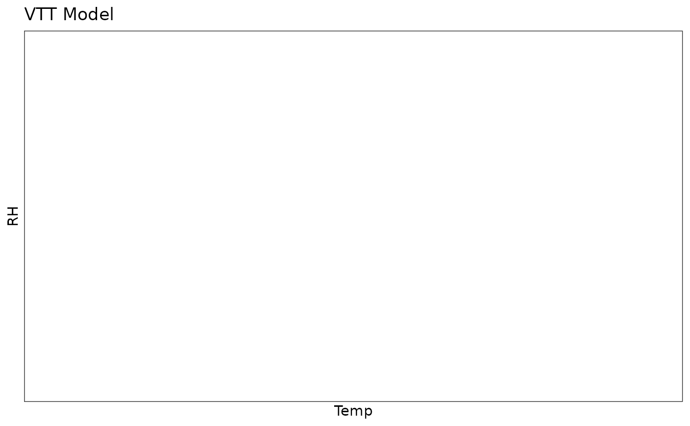
mydata |>
mutate(Mould_Zeng = calcMould_Zeng(Temp, RH))
#> # A tibble: 35,136 × 6
#> Site Sensor Date Temp RH Mould_Zeng
#> <chr> <chr> <dttm> <dbl> <dbl> <dbl>
#> 1 London Room 1 2024-01-01 00:00:00 21.8 36.8 75.1
#> 2 London Room 1 2024-01-01 00:15:00 21.8 36.7 75.1
#> 3 London Room 1 2024-01-01 00:29:59 21.8 36.6 75.1
#> 4 London Room 1 2024-01-01 00:44:59 21.7 36.6 75.1
#> 5 London Room 1 2024-01-01 00:59:59 21.7 36.5 75.1
#> 6 London Room 1 2024-01-01 01:14:59 21.7 36.2 75.1
#> 7 London Room 1 2024-01-01 01:29:59 21.7 36.3 75.1
#> 8 London Room 1 2024-01-01 01:44:59 21.7 36.4 75.1
#> 9 London Room 1 2024-01-01 01:59:59 21.7 36 75.1
#> 10 London Room 1 2024-01-01 02:14:59 21.6 36 75.2
#> # ℹ 35,126 more rows
mydata |>
mutate(Mould_Zeng = calcMould_Zeng(Temp, RH)) |>
ggplot() +
geom_line(aes(Date, Mould_Zeng), col = "purple") +
geom_line(aes(Date, RH), col = "blue") +
labs(title = "Mould Isoline Limit") +
theme_bw()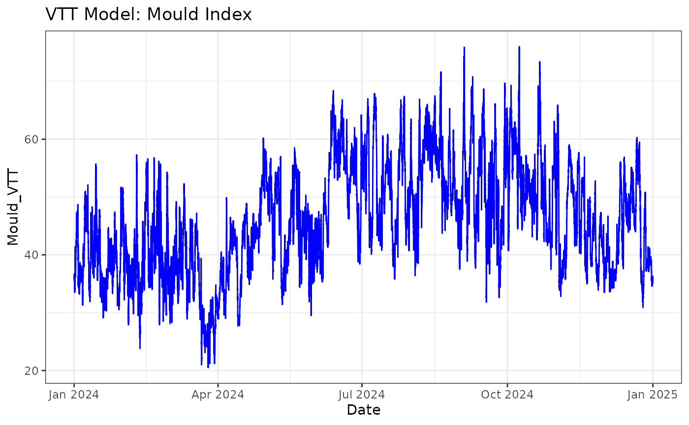
mydata |>
mutate(Mould_Zeng = calcMould_Zeng(Temp, RH, label = TRUE)) |>
ggplot() +
geom_bar(aes(Mould_Zeng, fill = Mould_Zeng)) +
coord_flip() +
labs(title = "Mould Isoline Limit") +
theme_void()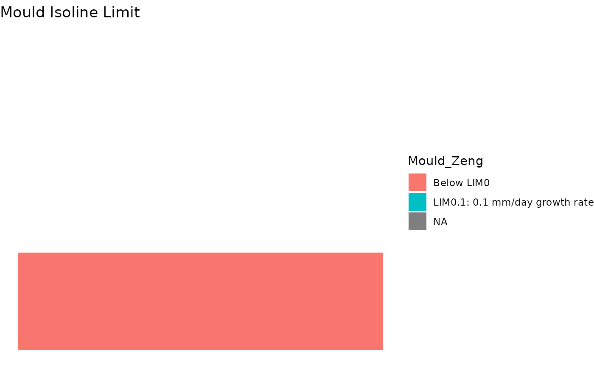
VTT model
TRHgrid |>
mutate(Mould_VTT = calcMould_VTT(Temp, RH)) |>
ggplot(aes(Temp, RH, z = Mould_VTT)) +
geom_contour_filled(bins = 20) +
labs(title = "VTT Model") +
theme_bw()
mydata |>
mutate(Mould_VTT = calcMould_VTT(Temp, RH))
#> # A tibble: 35,136 × 6
#> Site Sensor Date Temp RH Mould_VTT
#> <chr> <chr> <dttm> <dbl> <dbl> <dbl>
#> 1 London Room 1 2024-01-01 00:00:00 21.8 36.8 0
#> 2 London Room 1 2024-01-01 00:15:00 21.8 36.7 0
#> 3 London Room 1 2024-01-01 00:29:59 21.8 36.6 0
#> 4 London Room 1 2024-01-01 00:44:59 21.7 36.6 0
#> 5 London Room 1 2024-01-01 00:59:59 21.7 36.5 0
#> 6 London Room 1 2024-01-01 01:14:59 21.7 36.2 0
#> 7 London Room 1 2024-01-01 01:29:59 21.7 36.3 0
#> 8 London Room 1 2024-01-01 01:44:59 21.7 36.4 0
#> 9 London Room 1 2024-01-01 01:59:59 21.7 36 0
#> 10 London Room 1 2024-01-01 02:14:59 21.6 36 0
#> # ℹ 35,126 more rows
mydata |>
mutate(Mould_VTT = calcMould_VTT(Temp, RH)) |>
ggplot() +
geom_line(aes(Date, Mould_VTT), col = "purple") +
# geom_line(aes(Date, RH), col = "blue") +
labs(title = "VTT Model: Mould Index") +
theme_bw()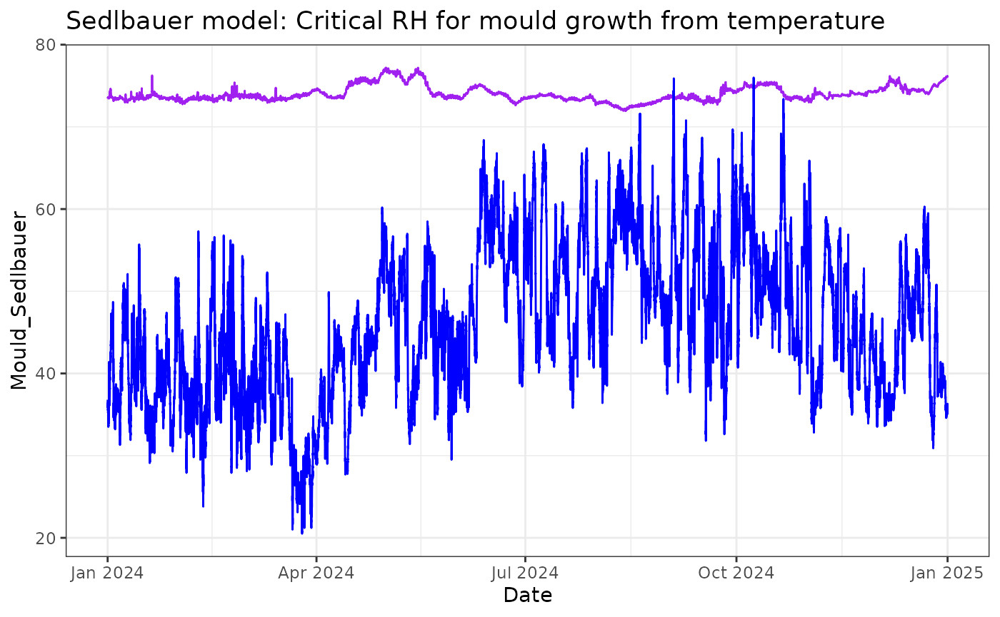
TRHgrid |>
mutate(Mould_Sedlbauer = calcMould_models(Temp, RH, model = "Sedlbauer")) |>
filter(Mould_Sedlbauer < 100) |>
ggplot(aes(Temp, RH, z = Mould_Sedlbauer)) +
geom_contour_filled(bins = 20) +
labs(title = "Sedlbauer model: Critical RH for mould growth from temperature") +
theme_bw()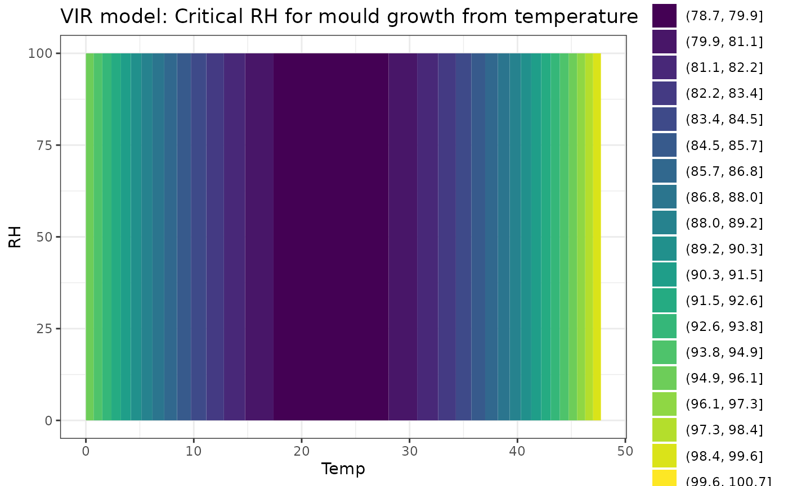
mydata |>
mutate(Mould_Sedlbauer = calcMould_models(Temp, RH, model = "Sedlbauer"))
#> # A tibble: 35,136 × 6
#> Site Sensor Date Temp RH Mould_Sedlbauer
#> <chr> <chr> <dttm> <dbl> <dbl> <dbl>
#> 1 London Room 1 2024-01-01 00:00:00 21.8 36.8 73.5
#> 2 London Room 1 2024-01-01 00:15:00 21.8 36.7 73.5
#> 3 London Room 1 2024-01-01 00:29:59 21.8 36.6 73.5
#> 4 London Room 1 2024-01-01 00:44:59 21.7 36.6 73.5
#> 5 London Room 1 2024-01-01 00:59:59 21.7 36.5 73.5
#> 6 London Room 1 2024-01-01 01:14:59 21.7 36.2 73.5
#> 7 London Room 1 2024-01-01 01:29:59 21.7 36.3 73.5
#> 8 London Room 1 2024-01-01 01:44:59 21.7 36.4 73.5
#> 9 London Room 1 2024-01-01 01:59:59 21.7 36 73.5
#> 10 London Room 1 2024-01-01 02:14:59 21.6 36 73.5
#> # ℹ 35,126 more rows
mydata |>
mutate(Mould_Sedlbauer = calcMould_models(Temp, RH, model = "Sedlbauer")) |>
ggplot() +
geom_line(aes(Date, Mould_Sedlbauer), col = "purple") +
geom_line(aes(Date, RH), col = "blue") +
labs(title = "Sedlbauer model: Critical RH for mould growth from temperature") +
theme_bw()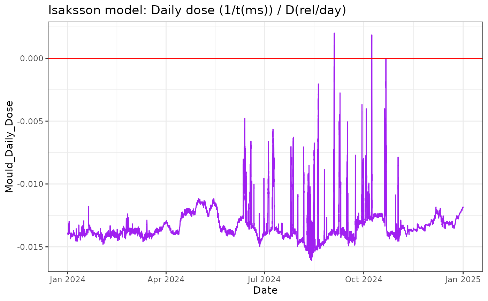
TRHgrid |>
mutate(Mould_VIR = calcMould_models(Temp, RH, model = "VIR")) |>
filter(Mould_VIR < 100) |>
ggplot(aes(Temp, RH, z = Mould_VIR)) +
geom_contour_filled(bins = 20) +
labs(title = "VIR model: Critical RH for mould growth from temperature") +
theme_bw()
mydata |>
mutate(Mould_VIR = calcMould_models(Temp, RH, model = "VIR"))
#> # A tibble: 35,136 × 6
#> Site Sensor Date Temp RH Mould_VIR
#> <chr> <chr> <dttm> <dbl> <dbl> <dbl>
#> 1 London Room 1 2024-01-01 00:00:00 21.8 36.8 79.0
#> 2 London Room 1 2024-01-01 00:15:00 21.8 36.7 79.0
#> 3 London Room 1 2024-01-01 00:29:59 21.8 36.6 79.0
#> 4 London Room 1 2024-01-01 00:44:59 21.7 36.6 79.0
#> 5 London Room 1 2024-01-01 00:59:59 21.7 36.5 79.0
#> 6 London Room 1 2024-01-01 01:14:59 21.7 36.2 79.0
#> 7 London Room 1 2024-01-01 01:29:59 21.7 36.3 79.0
#> 8 London Room 1 2024-01-01 01:44:59 21.7 36.4 79.0
#> 9 London Room 1 2024-01-01 01:59:59 21.7 36 79.0
#> 10 London Room 1 2024-01-01 02:14:59 21.6 36 79.0
#> # ℹ 35,126 more rows
mydata |>
mutate(Mould_VIR = calcMould_models(Temp, RH, model = "VIR")) |>
ggplot() +
geom_line(aes(Date, Mould_VIR), col = "purple") +
geom_line(aes(Date, RH), col = "blue") +
labs(title = "VIR model: Critical RH for mould growth from temperature") +
theme_bw()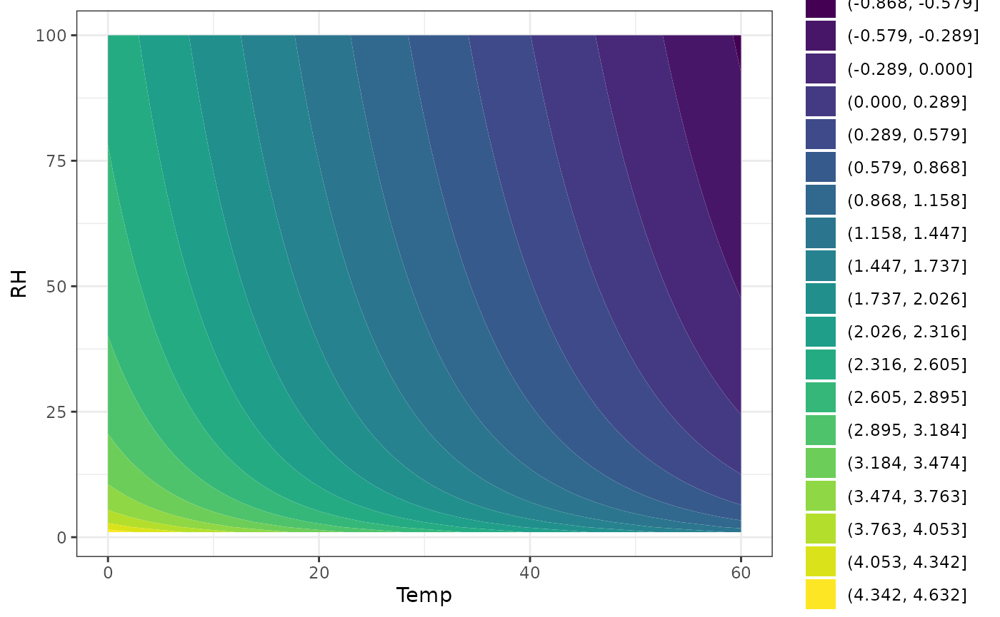
TRHgrid |>
mutate(Mould_Daily_Dose = calcMould_models(Temp, RH, model = "Isaksson")) |>
filter(Mould_Daily_Dose > 0) |>
ggplot(aes(Temp, RH, z = Mould_Daily_Dose)) +
geom_contour_filled(bins = 20) +
labs(title = "Isaksson model: Daily dose (1/t(ms)) / D(rel/day)") +
theme_bw()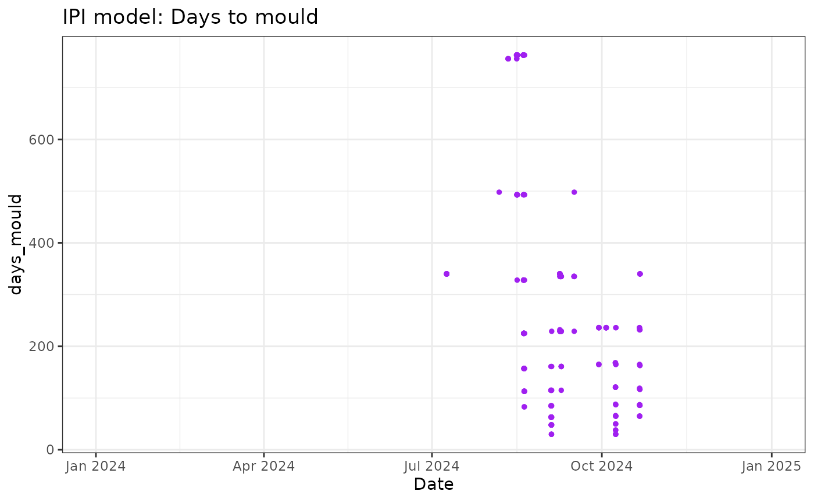
mydata |>
mutate(Mould_Daily_Dose = calcMould_models(Temp, RH, model = "Isaksson"))
#> # A tibble: 35,136 × 6
#> Site Sensor Date Temp RH Mould_Daily_Dose
#> <chr> <chr> <dttm> <dbl> <dbl> <dbl>
#> 1 London Room 1 2024-01-01 00:00:00 21.8 36.8 -0.0140
#> 2 London Room 1 2024-01-01 00:15:00 21.8 36.7 -0.0140
#> 3 London Room 1 2024-01-01 00:29:59 21.8 36.6 -0.0140
#> 4 London Room 1 2024-01-01 00:44:59 21.7 36.6 -0.0140
#> 5 London Room 1 2024-01-01 00:59:59 21.7 36.5 -0.0140
#> 6 London Room 1 2024-01-01 01:14:59 21.7 36.2 -0.0140
#> 7 London Room 1 2024-01-01 01:29:59 21.7 36.3 -0.0140
#> 8 London Room 1 2024-01-01 01:44:59 21.7 36.4 -0.0140
#> 9 London Room 1 2024-01-01 01:59:59 21.7 36 -0.0140
#> 10 London Room 1 2024-01-01 02:14:59 21.6 36 -0.0139
#> # ℹ 35,126 more rows
mydata |>
mutate(Mould_Daily_Dose = calcMould_models(Temp, RH, model = "Isaksson")) |>
ggplot() +
geom_line(aes(Date, Mould_Daily_Dose), col = "purple") +
geom_hline(yintercept = 0, col = "red") +
labs(title = "Isaksson model: Daily dose (1/t(ms)) / D(rel/day)") +
theme_bw()
calcMould requires a dataset with a “Date” column.
mydata |>
calcMould()
#> # A tibble: 35,136 × 11
#> Site Sensor Date Temp RH TempMould RHMould days_mould
#> <chr> <chr> <dttm> <dbl> <dbl> <dbl> <dbl> <dbl>
#> 1 London Room 1 2024-01-01 00:00:00 21.8 36.8 22 37 NA
#> 2 London Room 1 2024-01-01 00:15:00 21.8 36.7 22 37 NA
#> 3 London Room 1 2024-01-01 00:29:59 21.8 36.6 22 37 NA
#> 4 London Room 1 2024-01-01 00:44:59 21.7 36.6 22 37 NA
#> 5 London Room 1 2024-01-01 00:59:59 21.7 36.5 22 36 NA
#> 6 London Room 1 2024-01-01 01:14:59 21.7 36.2 22 36 NA
#> 7 London Room 1 2024-01-01 01:29:59 21.7 36.3 22 36 NA
#> 8 London Room 1 2024-01-01 01:44:59 21.7 36.4 22 36 NA
#> 9 London Room 1 2024-01-01 01:59:59 21.7 36 22 36 NA
#> 10 London Room 1 2024-01-01 02:14:59 21.6 36 22 36 NA
#> # ℹ 35,126 more rows
#> # ℹ 3 more variables: time_diff <drtn>, mould_prob <dbl>, mould <dbl>
mydata |>
calcMould() |>
ggplot() +
geom_point(aes(Date, days_mould), col = "purple", size = 1) +
labs(title = "IPI model: Days to mould") +
theme_bw()
mydata |>
calcMould() |>
ggplot() +
geom_area(aes(Date, mould), col = "purple") +
geom_hline(yintercept = 1, col = "red") +
labs(title = "IPI model: Mould probability") +
theme_bw()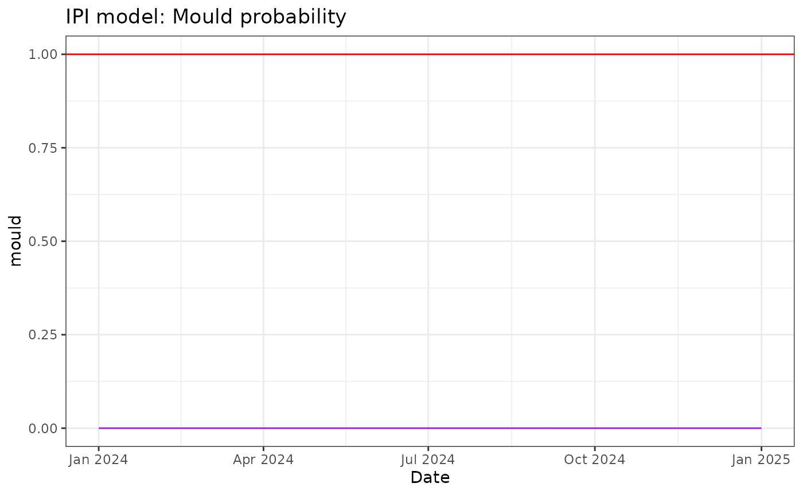
mydata |>
calcMould() |>
ggplot() +
geom_line(aes(Date, mould), col = "purple") +
geom_hline(yintercept = 1, col = "red") +
scale_y_log10() +
labs(title = "IPI model: Mould probability (log scale)") +
theme_bw()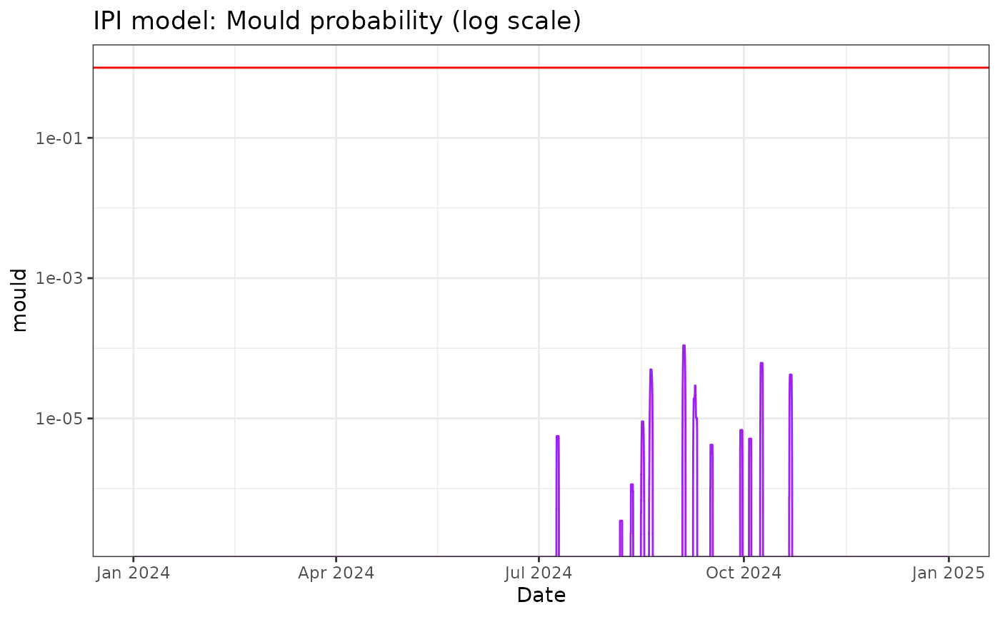
Lifetime multiplier
TRHgrid |>
mutate(LifeTime = calcLM(Temp, RH)) |>
ggplot(aes(Temp, RH, z = LifeTime)) +
geom_contour_filled(bins = 20) +
theme_bw()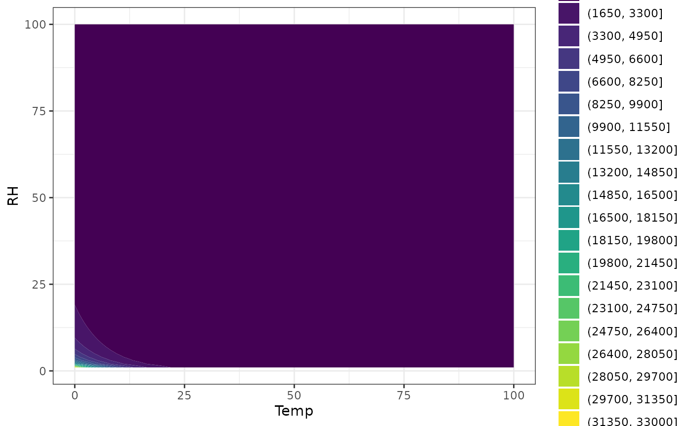
TRHgrid |>
mutate(LM_log = calcLM(Temp, RH) |> log10()) |>
ggplot(aes(Temp, RH, z = LM_log)) +
geom_contour_filled(bins = 20) +
theme_bw()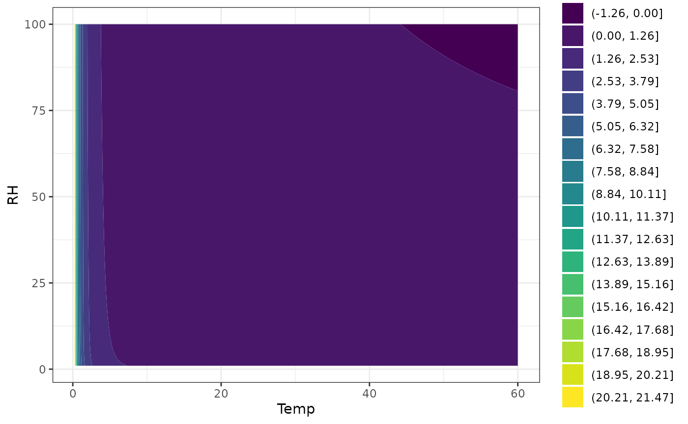